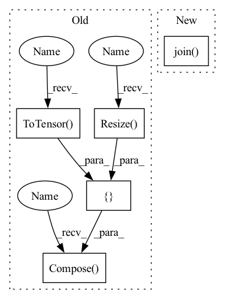

Pattern ID :31252
Before Change
if is_image_file(x)]
crop_size = image_size - (image_size % scale_factor) // Valid crop size
self.input_transform = transforms.Compose(
[ transforms.CenterCrop(crop_size), // cropping the image
transforms.Resize( crop_size // scale_factor) ,
transforms.ToTensor() ])
self.target_transform = transforms.Compose(
[transforms.CenterCrop(crop_size),
transforms.ToTensor()])
After Change
super(DatasetFromFolder, self).__init__()
self.data_filenames = [os.path.join(data_dir, x) for x in os.listdir(data_dir) if check_image_file(x)]
self.target_filenames = [os.path.join( target_dir, x) for x in os.listdir(target_dir) if check_image_file(x)]
self.transform = transforms.ToTensor()
In pattern: SUPERPATTERN
Frequency: 3
Non-data size: 5
Instances Fragment ID: 91643860
Project Name: lornatang/fsrcnn-pytorch
Commit Name: 9924908ee49d6dc5cd261a6fec71dce27002c401
Time: 2020-09-30
Author: liuchangyu1111@gmail.com
File Name: fsrcnn_pytorch/datasets.py
M Class Name: DatasetFromFolder
N Class Name: DatasetFromFolder
M Method Name: __init__(3)
N Method Name: __init__(4)
M Parent Class: Dataset
N Parent Class: Dataset
M File Name: fsrcnn_pytorch/datasets.py
N File Name: fsrcnn_pytorch/datasets.py
M Start Line: 38
M End Line: 58
N Start Line: 47
N End Line: 49
Before Change
mode, batchsz, n_way, k_shot, k_query, resize))
if mode == "train":
self.transform = transforms.Compose([ lambda x: Image.open(x).convert("RGB"),
transforms.Resize( (self.resize, self.resize)) ,
// transforms.RandomHorizontalFlip(),
// transforms.RandomRotation(5),
transforms.ToTensor() ,
transforms.Normalize((0.485, 0.456, 0.406), (0.229, 0.224, 0.225)))
else:
self.transform = transforms.Compose([lambda x: Image.open(x).convert("RGB"),
transforms.Resize((self.resize, self.resize)),
transforms.ToTensor(),After Change
with open(os.path.join(root, path_s), "rb") as f:
subgraph_list = pickle.load(f)
with open(os.path.join( root, path_l) , "rb") as f:
subgraph2label = pickle.load(f)
self.subgraph2label = subgraph2label Fragment ID: 91643861
Project Name: mims-harvard/g-meta
Commit Name: aed3468b5f71c857f788169b34b97a411628930b
Time: 2020-03-02
Author: cosamhkx@gmail.com
File Name: src/subgraph_data_processing.py
M Class Name: Subgraphs
N Class Name: Subgraphs
M Method Name: __init__(9)
N Method Name: __init__(9)
M Parent Class: Dataset
N Parent Class: Dataset
M File Name: src/subgraph_data_processing.py
N File Name: src/subgraph_data_processing.py
M Start Line: 44
M End Line: 70
N Start Line: 42
N End Line: 53
Before Change
>>> inputs, classes = next(iter(dataloaders[TRAIN]))
def __init__(self, root="/home/data/02_SSD4TB/suzy/datasets/public/chest-xray/", split="train", transform=None):
transform = transforms.Compose([
transforms.Resize( 256) ,
transforms.CenterCrop(224),
transforms.ToTensor() ,
transforms.Normalize([0.485, 0.456, 0.406], [0.229, 0.224, 0.225]))
super(ChestXray, self).__init__(
root=os.path.join(root, split), transform=transform)
def __getitem__(self, index):After Change
if download:
download_datasets(tag, path=root)
extract_zip(os.path.join(root, tag+".zip"), os.path.join( root, tag) )
self.target_transform = target_transform
if transform is None: Fragment ID: 91643859
Project Name: tuttelikz/farabio
Commit Name: a535350f613f18fde69848c346695dc34e1332f8
Time: 2021-04-07
Author: s.askaruly@gmail.com
File Name: farabio/data/biodatasets.py
M Class Name: ChestXray
N Class Name: ChestXray
M Method Name: __init__(7)
N Method Name: __init__(4)
M Parent Class: ImageFolder
N Parent Class: ImageFolder
M File Name: farabio/data/biodatasets.py
N File Name: farabio/data/biodatasets.py
M Start Line: 192
M End Line: 199
N Start Line: 188
N End Line: 206